library(tidymodels)
#> ── Attaching packages ──────────────────────────── tidymodels 1.4.1 ──
#> ✔ broom 1.0.9 ✔ rsample 1.3.1
#> ✔ dials 1.4.2 ✔ tailor 0.1.0
#> ✔ dplyr 1.1.4 ✔ tidyr 1.3.1
#> ✔ infer 1.0.9 ✔ tune 2.0.0
#> ✔ modeldata 1.5.1 ✔ workflows 1.3.0
#> ✔ parsnip 1.3.3 ✔ workflowsets 1.1.1
#> ✔ purrr 1.1.0 ✔ yardstick 1.3.2
#> ✔ recipes 1.3.1
#> ── Conflicts ─────────────────────────────── tidymodels_conflicts() ──
#> ✖ purrr::discard() masks scales::discard()
#> ✖ dplyr::filter() masks stats::filter()
#> ✖ dplyr::lag() masks stats::lag()
#> ✖ recipes::step() masks stats::step()
library(probably)
#>
#> Attaching package: 'probably'
#> The following objects are masked from 'package:base':
#>
#> as.factor, as.ordered
library(desirability2)
tidymodels_prefer()
theme_set(theme_bw())
options(pillar.advice = FALSE, pillar.min_title_chars = Inf)
# check torch:
if (torch::torch_is_installed()) {
library(torch)
}
# Load our example data for this section
"https://raw.githubusercontent.com/tidymodels/" |>
paste0("workshops/main/slides/class_data.RData") |>
url() |>
load()2 - Model optimization by tuning
Getting More Out of Feature Engineering and Tuning for Machine Learning
Startup!
Where we are
set.seed(429)
sim_split <- initial_split(class_data, prop = 0.75, strata = class)
sim_train <- training(sim_split)
sim_test <- testing(sim_split)
set.seed(523)
sim_rs <- vfold_cv(sim_train, v = 10, strata = class)Neural networks
The brulee package
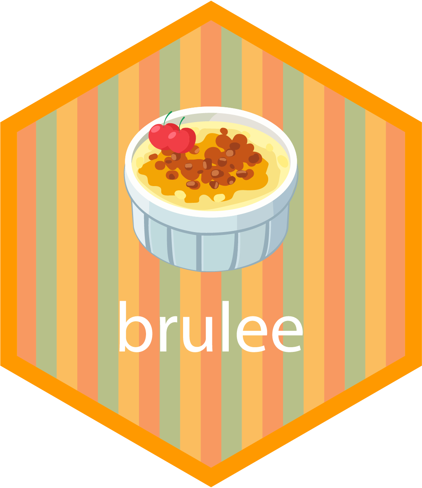
Several packages exist for this, but we’ll use the brulee package, which relies on the torch deep learning framework.
Let’s load the package and look at the documentation for the function that we will use:
# This might trigger a torch install:
library(brulee)
# ?brulee_mlp(HTML docs are nice too)
Notable arguments Part 1
Model Structure:
hidden_units: the primary way to specify model complexity.activation: the name of the nonlinear function used to connect the predictors to the hidden layer.
. . .
Loss Function:
penalty: amount of regularization used to prevent overfitting.mixture: the proportion of L1 and L2 penalties.validation: proportion of data to leave out to assess early stopping.
Notable arguments Part 2
Optimization:
optimizer: the type of gradient-based optimizationepochs: how many passes through the entire data set (i.e. iterations).stop_iter: number of bad iterations before stopping.learn_rate: how fast does gradient descent move?rate_schedule: should the learning rate change over epochs?batch_size: for stochastic gradient descent
That’s a lot 😩
Cost-sensitive learning
One other option: class_weights: amount to upweight the minority class (event) when computing the objective function (cross-entropy).
We have a moderate class imbalance and we’ll use this argument to deal with it.
This will push the minority class probability estimates to be more accurate/calibrated. Overall the model will be less effective; this assumes the minority class is the class of interest.
A single model 
nnet_ex_spec <-
mlp(hidden_units = 20, penalty = 0.01, learn_rate = 0.005, epochs = 100) |>
set_engine("brulee", class_weights = 3, stop_iter = 10) |>
set_mode("classification")
rec <-
recipe(class ~ ., data = sim_train) |>
step_normalize(all_numeric_predictors())
nnet_ex_wflow <- workflow(rec, nnet_ex_spec)
# Fit on first fold's 90% analysis set
set.seed(147)
nnet_ex_fit <- fit(nnet_ex_wflow, data = analysis(sim_rs$splits[[1]]))Did it converge?
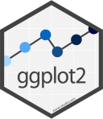
Did it work?
assessment_data <- assessment(sim_rs$splits[[1]])
cls_mtr <- metric_set(brier_class, roc_auc, sensitivity, specificity)
holdout_pred <- augment(nnet_ex_fit, assessment_data)
# Performance metrics
holdout_pred |> cls_mtr(class, estimate = .pred_class, .pred_event)
#> # A tibble: 4 × 3
#> .metric .estimator .estimate
#> <chr> <chr> <dbl>
#> 1 sensitivity binary 0.765
#> 2 specificity binary 0.948
#> 3 brier_class binary 0.0500
#> 4 roc_auc binary 0.958Kind of?
If sensitivity is important, then the model is moderately successful.
Calibration
Is it calibrated? 
Optimizing Models via Tuning Parameters
Tuning parameters
Some model or preprocessing parameters cannot be estimated directly from the data.
. . .
Some examples:
- Tree depth in decision trees
- Number of neighbors in a K-nearest neighbor model
Activation function in neural networks?
Sigmoidal functions, ReLu, etc.
Yes, it is a tuning parameter. ✅
Number of PCA columns to generate for feature extraction?
Yes, it is a preprocessing tuning parameter. ✅
The validation set size?
Nope! ❌
Bayesian priors for model parameters?
Hmmmm, probably not. These are based on prior belief. ❌
The class probability cutoff?
This is a value \(C\) used to threshold \(Pr[Class = 1] \ge C\).
For two classes, the default is \(C = 1/2\).
Yes, it is a postprocessing tuning parameter. ✅
The random seed?
Nope. It is not. ❌
Optimize tuning parameters
- Try different values and measure their performance.
. . .
- Find good values for these parameters.
. . .
- Once the value(s) of the parameter(s) are determined, a model can be finalized by fitting the model to the entire training set.
Tagging parameters for tuning 
With tidymodels, you can mark the parameters that you want to optimize with a value of tune().
The function itself just returns… itself:
tune()
#> tune()
str(tune())
#> language tune()
# optionally add a label
tune("I hope that the workshop is going well")
#> tune("I hope that the workshop is going well"). . .
For example…
Optimizing the neural network
nnet_spec <-
mlp(hidden_units = tune(), penalty = tune(), learn_rate = tune(),
epochs = 100, activation = tune()) |>
set_engine("brulee", class_weights = tune(), stop_iter = 10) |>
set_mode("classification")
nnet_wflow <- workflow(rec, nnet_spec)
nnet_wflow
#> ══ Workflow ══════════════════════════════════════════════════════════
#> Preprocessor: Recipe
#> Model: mlp()
#>
#> ── Preprocessor ──────────────────────────────────────────────────────
#> 1 Recipe Step
#>
#> • step_normalize()
#>
#> ── Model ─────────────────────────────────────────────────────────────
#> Single Layer Neural Network Model Specification (classification)
#>
#> Main Arguments:
#> hidden_units = tune()
#> penalty = tune()
#> epochs = 100
#> activation = tune()
#> learn_rate = tune()
#>
#> Engine-Specific Arguments:
#> class_weights = tune()
#> stop_iter = 10
#>
#> Computational engine: bruleeOptimize tuning parameters
The main two strategies for optimization are:
Grid search which tests a pre-defined set of candidate values
Iterative search which suggests/estimates new values of candidate parameters to evaluate
Grid search
A small grid of points trying to minimize the error via learning rate:

Grid search
In reality we would probably sample the space more densely:

Iterative Search
We could start with a few points and search the space:

Grid Search
Parameters
The tidymodels framework provides pre-defined information on tuning parameters (such as their type, range, transformations, etc).
The
extract_parameter_set_dials()function extracts these tuning parameters and the info.
nnet_param <-
nnet_wflow |>
extract_parameter_set_dials()
nnet_param
#> Collection of 5 parameters for tuning
#>
#> identifier type object
#> hidden_units hidden_units nparam[+]
#> penalty penalty nparam[+]
#> activation activation dparam[+]
#> learn_rate learn_rate nparam[+]
#> class_weights class_weights nparam[+]
#> Different types of grids 
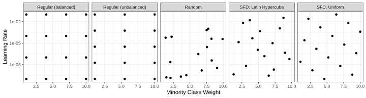
Space-filling designs (SFD) attempt to cover the parameter space without redundant candidates. We recommend these the most and they are the default.
Extract and update parameters
nnet_param <-
nnet_param |>
update(
class_weights = class_weights(c(1, 50))
)
nnet_param
#> Collection of 5 parameters for tuning
#>
#> identifier type object
#> hidden_units hidden_units nparam[+]
#> penalty penalty nparam[+]
#> activation activation dparam[+]
#> learn_rate learn_rate nparam[+]
#> class_weights class_weights nparam[+]
#> Grid Search
. . .
✋ maybe don’t run this just yet…
tune_grid()is representative of tuning function syntax- similar to
fit_resamples()
TODO make an annotation about “Early stopping occurred at epoch 3 due to numerical overflow of the loss function.”
Running in parallel
Grid search, combined with resampling, requires fitting a lot of models!
These models don’t depend on one another and can be run in parallel.
We can use the future or mirai packages to do this:
cores <- parallelly::availableCores(logical = FALSE)library(future)
plan(multisession, workers = cores)
# Now call `tune_grid()`!library(mirai)
daemons(cores)
# Now call `tune_grid()`!Distributing tasks
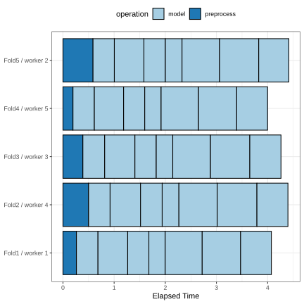
Running in parallel
Speed-ups are fairly linear up to the number of physical cores (10 here).
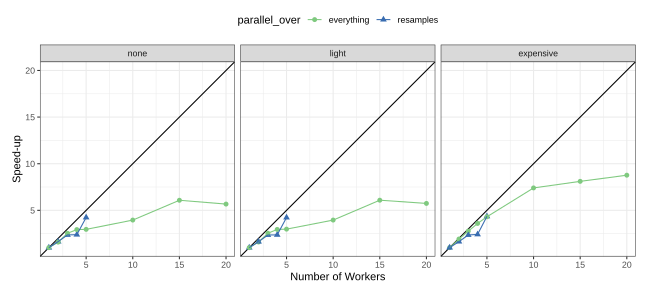
Using 10 cores with mirai, time to execute the previous tune_grid() call was reduced from 256s to 45s, a speed-up of 5.7-fold.
Faceted on the expensiveness of preprocessing used.
Grid Search
nnet_res
#> # Tuning results
#> # 10-fold cross-validation using stratification
#> # A tibble: 10 × 5
#> splits id .metrics .notes .predictions
#> <list> <chr> <list> <list> <list>
#> 1 <split [1348/151]> Fold01 <tibble [100 × 9]> <tibble [3 × 4]> <tibble>
#> 2 <split [1349/150]> Fold02 <tibble [100 × 9]> <tibble [1 × 4]> <tibble>
#> 3 <split [1349/150]> Fold03 <tibble [100 × 9]> <tibble [3 × 4]> <tibble>
#> 4 <split [1349/150]> Fold04 <tibble [100 × 9]> <tibble [4 × 4]> <tibble>
#> 5 <split [1349/150]> Fold05 <tibble [100 × 9]> <tibble [2 × 4]> <tibble>
#> 6 <split [1349/150]> Fold06 <tibble [96 × 9]> <tibble [5 × 4]> <tibble>
#> 7 <split [1349/150]> Fold07 <tibble [100 × 9]> <tibble [0 × 4]> <tibble>
#> 8 <split [1349/150]> Fold08 <tibble [100 × 9]> <tibble [3 × 4]> <tibble>
#> 9 <split [1350/149]> Fold09 <tibble [100 × 9]> <tibble [1 × 4]> <tibble>
#> 10 <split [1350/149]> Fold10 <tibble [100 × 9]> <tibble [3 × 4]> <tibble>
#>
#> There were issues with some computations:
#>
#> - Error(s) x1: 'best_epoch' should be an integer
#> - Warning(s) x1: Loss is NaN at epoch 1. Training is stopped.
#> - Warning(s) x1: Loss is NaN at epoch 10. Training is stopped.
#> - Warning(s) x1: Loss is NaN at epoch 11. Training is stopped.
#> - Warning(s) x1: Loss is NaN at epoch 12. Training is stopped.
#> - Warning(s) x2: Loss is NaN at epoch 2. Training is stopped.
#> - Warning(s) x1: Loss is NaN at epoch 4. Training is stopped.
#> - Warning(s) x3: Loss is NaN at epoch 5. Training is stopped.
#> - Warning(s) x2: Loss is NaN at epoch 6. Training is stopped.
#> - Warning(s) x6: Loss is NaN at epoch 7. Training is stopped.
#> - Warning(s) x5: Loss is NaN at epoch 8. Training is stopped.
#> - Warning(s) x1: Loss is NaN at epoch 9. Training is stopped.
#>
#> Run `show_notes(.Last.tune.result)` for more information.Grid results
autoplot(nnet_res)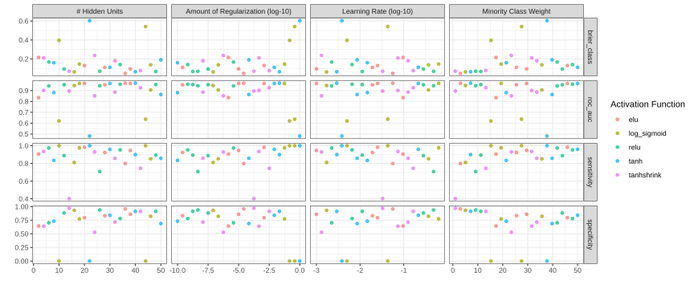
Brier results
autoplot(nnet_res, metric = "brier_class") +
facet_grid(. ~ name, scale = "free_x") +
lims(y = c(0.04, 0.22)) # no tanh
#> Warning: Removed 16 rows containing missing values or values outside the scale
#> range (`geom_point()`).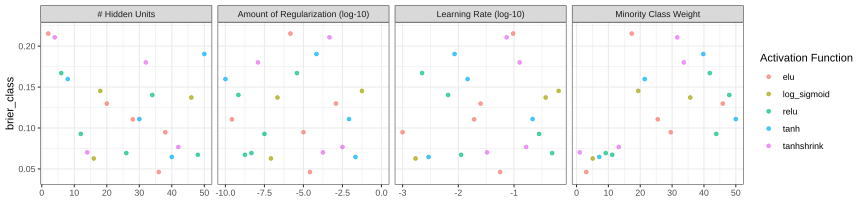
ROC curve results
autoplot(nnet_res, metric = "roc_auc") +
facet_grid(. ~ name, scale = "free_x") +
lims(y = c(0.83, 0.97)) # no tanh
#> Warning: Removed 12 rows containing missing values or values outside the scale
#> range (`geom_point()`).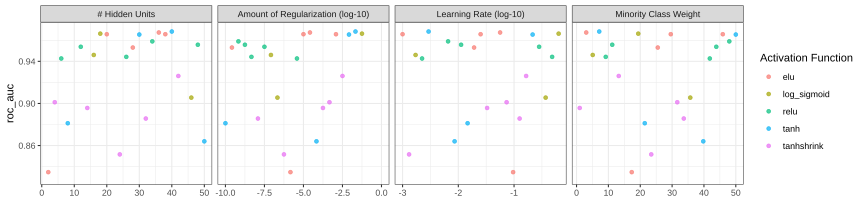
Sensitivity/Specificity results
autoplot(nnet_res, metric = c("sensitivity", "specificity"))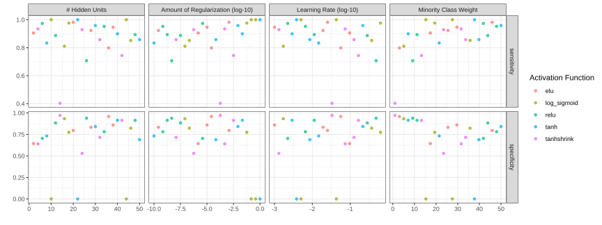
Grid results
- tanh activation 👎👎
- As class weight ⬆️:
- sensitivity ⬆️
- specificity ⬇️⬇️
- Brier: ⬆️
- ROC AUC: 🤷
Optimizing Models via Tuning Parameters
Tuning results
collect_metrics(nnet_res) |>
relocate(.metric, mean)
#> # A tibble: 100 × 11
#> .metric mean hidden_units penalty activation learn_rate class_weights
#> <chr> <dbl> <int> <dbl> <chr> <dbl> <dbl>
#> 1 brier_class 0.215 2 0.00000147 elu 0.0962 17.3
#> 2 roc_auc 0.835 2 0.00000147 elu 0.0962 17.3
#> 3 sensitivity 0.905 2 0.00000147 elu 0.0962 17.3
#> 4 specificity 0.644 2 0.00000147 elu 0.0962 17.3
#> 5 brier_class 0.211 4 0.000464 tanhshrink 0.0736 31.6
#> 6 roc_auc 0.901 4 0.000464 tanhshrink 0.0736 31.6
#> 7 sensitivity 0.935 4 0.000464 tanhshrink 0.0736 31.6
#> 8 specificity 0.641 4 0.000464 tanhshrink 0.0736 31.6
#> 9 brier_class 0.167 6 0.00000383 relu 0.00224 41.8
#> 10 roc_auc 0.943 6 0.00000383 relu 0.00224 41.8
#> # ℹ 90 more rows
#> # ℹ 4 more variables: .estimator <chr>, n <int>, std_err <dbl>, .config <chr>Tuning results
collect_metrics(nnet_res, summarize = FALSE) |>
relocate(.metric, .estimate)
#> # A tibble: 996 × 10
#> .metric .estimate id hidden_units penalty activation learn_rate
#> <chr> <dbl> <chr> <int> <dbl> <chr> <dbl>
#> 1 sensitivity 0.824 Fold01 2 0.00000147 elu 0.0962
#> 2 specificity 0.910 Fold01 2 0.00000147 elu 0.0962
#> 3 brier_class 0.0659 Fold01 2 0.00000147 elu 0.0962
#> 4 roc_auc 0.967 Fold01 2 0.00000147 elu 0.0962
#> 5 sensitivity 1 Fold02 2 0.00000147 elu 0.0962
#> 6 specificity 0.474 Fold02 2 0.00000147 elu 0.0962
#> 7 brier_class 0.305 Fold02 2 0.00000147 elu 0.0962
#> 8 roc_auc 0.797 Fold02 2 0.00000147 elu 0.0962
#> 9 sensitivity 0.941 Fold03 2 0.00000147 elu 0.0962
#> 10 specificity 0.910 Fold03 2 0.00000147 elu 0.0962
#> # ℹ 986 more rows
#> # ℹ 3 more variables: class_weights <dbl>, .estimator <chr>, .config <chr>Choose a parameter combination
show_best(nnet_res, metric = "brier_class") |>
relocate(.metric, mean)
#> # A tibble: 5 × 11
#> .metric mean hidden_units penalty activation learn_rate class_weights
#> <chr> <dbl> <int> <dbl> <chr> <dbl> <dbl>
#> 1 brier_class 0.0463 36 2.61e-5 elu 0.0562 3.04
#> 2 brier_class 0.0628 16 8.25e-8 log_sigmo… 0.00171 5.08
#> 3 brier_class 0.0646 40 2.15e-2 tanh 0.00293 7.12
#> 4 brier_class 0.0673 48 1.78e-9 relu 0.0112 11.2
#> 5 brier_class 0.0694 26 4.64e-9 relu 0.482 9.17
#> # ℹ 4 more variables: .estimator <chr>, n <int>, std_err <dbl>, .config <chr>Choose a parameter combination
Create your own tibble for final parameters or use one of the tune::select_*() functions:
nnet_best <- select_best(nnet_res, metric = "brier_class")
nnet_best
#> # A tibble: 1 × 6
#> hidden_units penalty activation learn_rate class_weights .config
#> <int> <dbl> <chr> <dbl> <dbl> <chr>
#> 1 36 0.0000261 elu 0.0562 3.04 pre0_mod18_post0
collect_metrics(nnet_res) |>
inner_join(nnet_best) |>
select(.metric, mean)
#> Joining with `by = join_by(hidden_units, penalty, activation,
#> learn_rate, class_weights, .config)`
#> # A tibble: 4 × 2
#> .metric mean
#> <chr> <dbl>
#> 1 brier_class 0.0463
#> 2 roc_auc 0.967
#> 3 sensitivity 0.799
#> 4 specificity 0.958Checking (Approximate) Calibration
nnet_holdout_pred <-
nnet_res |>
collect_predictions(
parameters = nnet_best
)
nnet_holdout_pred |>
cal_plot_windowed(
truth = class,
estimate = .pred_event,
window_size = 0.2,
step_size = 0.025,
)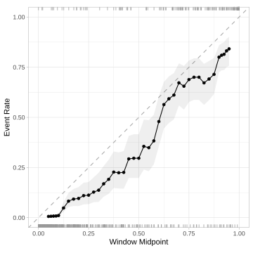
This plot pools the out-of-sample predictions. Our Brier estimate is the mean of 10 data sets.
The curve is approximate for that reason.
Multiple goals
Optimizing on the Brier score optimizes for accuracy and calibration of the class probabilities.
That’s is counter-productive to finding the rare class “event” events.
Can we find a way to optimize multiple metrics at once?
There are a few ways and we’ll focus on desirability functions.
Desirability functions
We create simple functions to translate our variable to [0, 1]; 1.0 is most desirable.
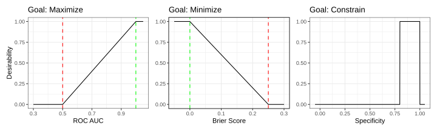
We can combine them with a geometric mean.
Multimetric optimization
show_best_desirability(
nnet_res,
maximize(sensitivity),
minimize(brier_class),
constrain(specificity, low = 0.8, high = 1.0)
) |>
relocate(class_weights, sensitivity, specificity, brier_class)
#> # A tibble: 5 × 14
#> class_weights sensitivity specificity brier_class hidden_units penalty
#> <dbl> <dbl> <dbl> <dbl> <int> <dbl>
#> 1 29.6 0.947 0.859 0.0948 38 1 e- 5
#> 2 50 0.958 0.841 0.111 30 8.25e- 3
#> 3 7.12 0.899 0.914 0.0646 40 2.15e- 2
#> 4 11.2 0.894 0.914 0.0673 48 1.78e- 9
#> 5 25.5 0.923 0.833 0.111 28 2.61e-10
#> # ℹ 8 more variables: activation <chr>, learn_rate <dbl>, .config <chr>,
#> # roc_auc <dbl>, .d_max_sensitivity <dbl>, .d_min_brier_class <dbl>,
#> # .d_box_specificity <dbl>, .d_overall <dbl>However…
more_sens <-
select_best_desirability(
nnet_res,
maximize(sensitivity),
minimize(brier_class),
constrain(specificity, low = 0.8, high = 1.0)
)
nnet_res |>
collect_predictions(
parameters = more_sens
) |>
cal_plot_windowed(
truth = class,
estimate = .pred_event,
window_size = 0.2,
step_size = 0.025,
)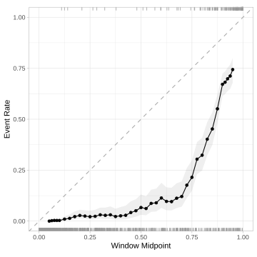
The curve hugging the bottom of the plot means that we are drastically overestimating the probability of class “event” relative to how often it occurs “in the wild.”
That’s the point of cost-sensitive learning but bad for calibration.
Conflicting goals
The problem here is that we are biasing the probability estimates so that we can predict more data to be the rare “event” class using a default probability cutoff of 1/2.
That is compromising the overall model fit; our probabilities are not accurate.
- If we don’t use the class probability estimates, this is fine.
In the postprocessing slides, we’ll look at a alternative approach later that makes a different kinds of tradeoff.
Fitting a workflow
Let’s say that we want to train the model on the “best” parameter estimates.
We can use a tibble of tuning parameters and splice them into the workflow in place of tune():
nnet_sens_fit |> extract_fit_engine()
#> Multilayer perceptron
#>
#> elu activation,
#> 38 hidden units,
#> 1,256 model parameters
#> 1,499 samples, 30 features, 2 classes
#> class weights event=29.58333, no_event= 1.00000
#> weight decay: 1e-05
#> dropout proportion: 0
#> batch size: 1350
#> learn rate: 0.001
#> validation loss after 68 epochs: 0.145Ordering off of the menu
If we want to choose from the numerically best for an existing metric, there is a simpler function:
mlp_brier_fit |> extract_fit_engine()
#> Multilayer perceptron
#>
#> elu activation,
#> 36 hidden units,
#> 1,190 model parameters
#> 1,499 samples, 30 features, 2 classes
#> class weights event=3.041667, no_event=1.000000
#> weight decay: 2.610157e-05
#> dropout proportion: 0
#> batch size: 1350
#> learn rate: 0.05623413
#> validation loss after 6 epochs: 0.411Your turn
pick an activation function and fix; try tuning using a rate scheduler
or
show how extract works
What’s next
Let’s look at racing: an old variation of grid search that adaptively processes the grid.
If we are
- initially screening many models/preprocessors/postprocessors and/or
- have a large grid
this can lead to remarkable speed-ups.